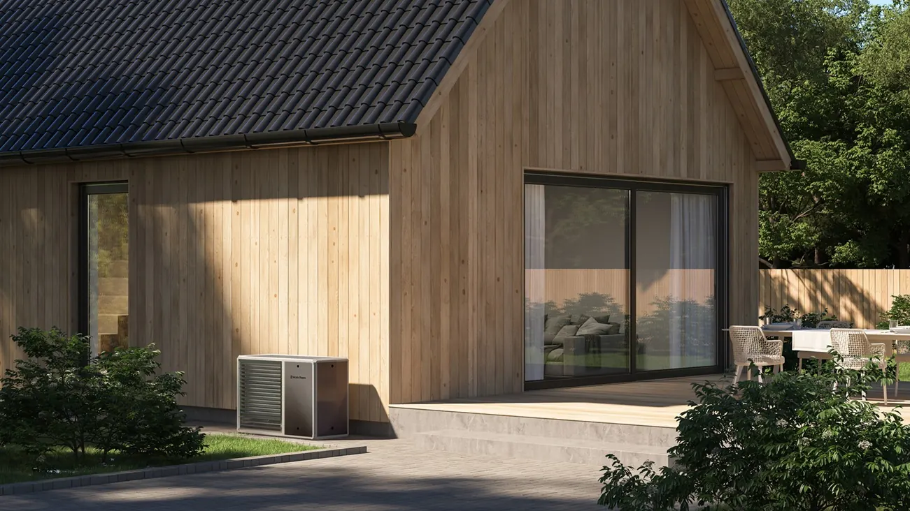

Wir übernehmen regelmässige Wartung, Serviceinspektionen und Revisionen von Heizkesseln, Wärmepumpen und Klimaanlagen nach den Vorgaben der Hersteller.
Service für die von uns vertretenen Marken, nach den Vorgaben der Hersteller.
Regelmässige Wartung und Reinigung von Festbrennstoff- und Pelletkesseln nach Herstellerplan.
Kontrolle des Kältekreislaufs, der Leistung und der Effizienz der Wärmepumpe.
Filterreinigung, Kontrolle des Kältemittels und der Effizienz der Klimaanlagen.
Kontrolle der Regelung und der Einstellungen von Betrieb und Verbrauch.
Einsatz bei Ausfall von Heizung oder Kühlung ausserhalb der Geschäftszeiten.
Wir dokumentieren die Servicehistorie der Anlage, die für die Garantie nötig ist.
Sie wählen einen Termin telefonisch, per E-Mail oder über das Formular.
Sie beschreiben Ihre Anforderungen, wir führen eine erste Kontrolle der Anlage durch.
Wir führen den Service durch und informieren über eventuelle weitere Feststellungen.
Wir übergeben das Serviceprotokoll und Empfehlungen für den Betrieb.

Wir warten keine fremden Systeme. Wir vertreten ausschliesslich unsere eigenen Hersteller und bieten Service ausschliesslich für deren Anlagen an, nach den Vorgaben direkt vom Hersteller.
Ja, der Service erfolgt nach den vorgeschriebenen Herstellervorgaben, und wir führen ein vollständiges Servicebuch.
Die empfohlene Häufigkeit variiert je nach Anlagentyp, üblicherweise einmal jährlich, bei Festbrennstoffkesseln auch vor der Heizsaison.
Ja, bei schwerwiegenden Heiz- oder Kühlungsstörungen bieten wir einen Notdienst an.